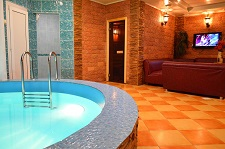

- РЕСТОРАН
 ВІДПОЧИНОК
ВІДПОЧИНОК САУНА
САУНА ФОТОГРАФ
ФОТОГРАФ
Ресторан «Mercure»
Ресторан «Mercure» - один із найвідоміших закладів Івано-франківська та найяскравіша зірка Групи компаній «Наша Карта». Головний принцип роботи ресторану – найвищий рівень пропозицій та послуг. Це правило стосується абсолютно усього – від вишуканих страв високої кухні до спеціальних сервісів унікального меню. Все найкраще із ресторанного світу ми зібрали в одному закладі для того, щоб кожного разу вас переповнювали тільки неперевершені відчуття!
Тепер, кожну п'ятницю ми доставляємо свіжі входи устриць з головних устрічних регіонів. Нова неделя - новий сорт, щоб ми разом могли дегустировать, порівнювати і ділитися враженнями. А подаємо устриці ми по полдюжини або одноразово, щоб кожен чув чудеса нашого Устричного сезону, незалежно від апетиту!
Органічна кухня та здорова їжа
Все нове — це добре забуте старе, нагадує нам мудре прислів’я. Органічні продукти, які колись були невід’ємною частиною життя усіх мешканців Землі, тепер вважаються предметом розкоші. Адже ціни на такі продукти, що не забруднені пестицидами і вирощені природним шляхом зі збереженням усіх поживних речовин, в кілька разів вищі за «звичайні» продукти — тобто ті, що просякнуті хімією.За однозначними оцінками експертів, світовий ринок органічних продуктів останніми роками стабільно зростає. Найбільшою популярністю органік-їжа користується в Японії, США, Європі (особливо Італії та Німеччині, які не лише покривають свої внутрішні потреби у смачній та здоровій їжі, але й забезпечують левову частку світового експорту bio-товарів). Органічні продукти органічно вписалися в світовий тренд, що стає все більш популярним, — здоровий спосіб життя і здорове харчування
Кімнати відпочинку
Скористатись компютером з безкоштовним інтернетом, роздрукувати необхідний документ, зателефонувати в будь-яку міську установу на стаціонарні номери, провести ділову розмову, чи просто переглянути улюблену телепередачу та випити чашечку кави. Усі ці можливості зроблять Ваше перебування у готельному комплексі «Глобус» комфортним та приємним. Клієнти, у яких є кілька годин між рейсами, можуть провести час в тиші і з комфортом. У кімнаті телевізор, мікрохвильова піч, електрочайник, зарядний пристрій для будь-яких гаджетів, кулер з питною водою, Wi-Fi.
Боулінг
Боулінг - спорт, в якому гравці намагаються набрати очки, перекочуючи боулінгові кулі по плоскій поверхні, щоб збити кеглі. Існує багато форм боулінгу, найдавніші з них з'явилися в стародавній Індії. Витоки цієї гри простежуються також в древній Фінляндії та Ємені, і набагато пізніше (в 300 році. нашої ери) у Німеччині.
Більярд
Бильярдный клуб "Динарис" запрошує гостей та жителів міста Івано-Франківська приємно провести час у бейліардному клубі за грою. Здесь на вас ожидают: Руська пирамида-12 футів-8 игрових столів;Американка - 1 пул;VIP зал - 12 футів - російська пірамідка;Бар; У нашому бильярдному клубі Ви зможете крім гри ще насолодитися блюдами української та європейської кухні.
Бар
Напрямок кухні Бару - гриль, стейк та барбекю, а також популярні страви української кухні. Особливу увагу в меню приділено м'ясним стравам - соковиті стейки, домашні ковбаски, ескалопи, шніцеля, соковита мясна таріль для компанії - і все це ще не повний перелік! В Барі представлений широкий асортимент алкогольних напоїв - коктейлі світового стандарту, віскі, ром, джин, горілка, текіла, лікери, настоянки та вермути.

Дитяча кімната
Перегляд мультиків на подушках, малювання на дошках, ігровий лабіринт з гірками і сухими бассейнами, різнокольорові кульки, підвісні і наземні перешкоди, потішать маленьких непосид. Тут можна вдосталь набігатись та завести багато нових друзів. Творчий куточок, де діти зможуть малювати, складати конструктори, пазли, грати з іграшками. Ми із задоволенням потурбуємося, щоб дитячий день народження пройшов якомога яскравіше і веселіше, ми з радістю організуєм цікаві квести, ігри та конкурси
Cауна "Mercere"
Сауна «Mercure» - це саме те місце, де Ви зможете забути про примхи повсякденного життя, поринути у світ справжньої релаксації. Для тих хто любить гарно відпочити з сім’єю, весело провести час з друзями чи розслабитись в романтичній атмосфері - ми чекаємо на Вас 24 години на добу та 365 днів у році.
ЗАПРОШУЄМО ТА ПРОПОНУЄМО: - Можливість замовлення банщика-масажиста. - гаряча фінська парна з натурального дерева; - великий теплий басейн з гідромасажем,протитечією та кольоровою підсвіткою; - басейн з джакузі; - дубова бочка з холодною водою; - кімнату відпочинку з кабельне телебаченням ,телефоном; - масажна кімната; - простора душова з відром-водопадом; - банні аксесуари. Також у Вас э можливість замовити у сауну запашний шашличок чи найсмачніші страви від шеф-кухара, насолодитись теплим карпатським чаєм або навпаки - замовити охолоджуючий напій. Смачна їжа, гарний настрій і помірні ціни – гарантовані!
Іван Мотрук
Привіт!!! Мене звати Іван. Моя головна ціль створити спогади, якими Ви зможете пишатися, створити прекрасні кадри ваших моментів. Ціную простоту та відкритість стосунків, щирість і чистоту в людських діях та помислах. Мене надихають подорожі, красиві речі, картини, талановиті люди, нестандартні фільми, креативні дрібнички, безмежність фантазії. Я поважаю мудрість, доброту та відданість
В своїх роботах, як фотограф, ставлю акцент на правдивість та наповненість життям цінних Вам речей. Стараюся бути Вашими думками та очима, щоб передати всі почуття та переживання кожного моменту та дбайливо зберегти їх для Вас назавжди!
Copyright ©Domain Name - All Rights Reserved | Design By Nazar Mytskan